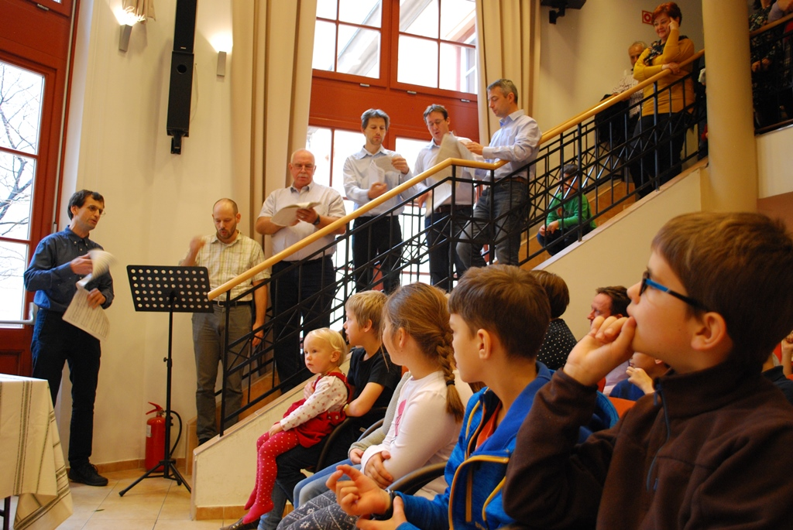
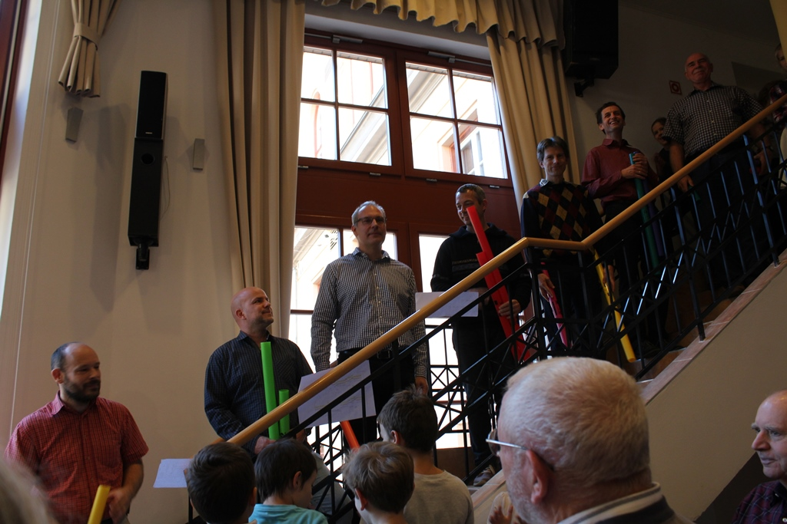
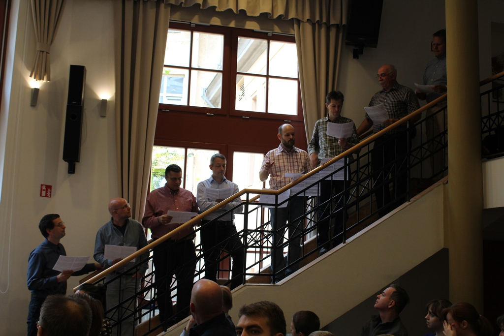
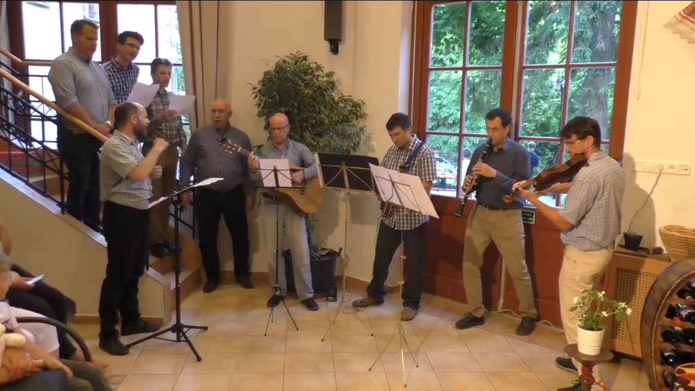
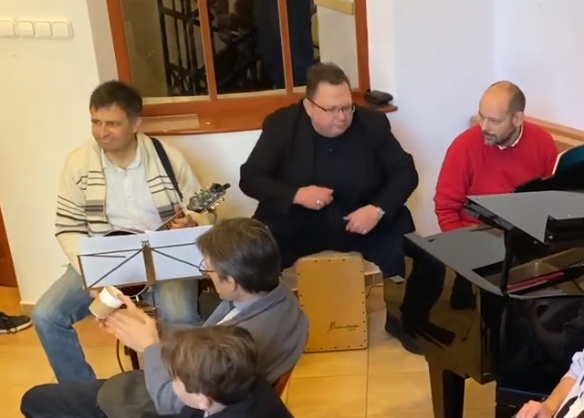

2017 őszén legnagyobb lányom már éppen elballagott a PaSából, a gimit kezdte, két kisebb lányom hetedikes és negyedikes, fiam pedig másodikos volt. Ez volt a kilencedik évünk a PaSában eltöltött tizenöt közül, benne voltunk a sűrűjében.
Szülőként sokszor részt vettünk a reggeli imán, és hallgattuk, énekeltük az Ahol szeretet ismert, otthonos dallamát a többi szülővel. Néha plusz szólamokat dudorásztam a dalhoz kicsit dzsesszesebb figurákkal, és egyszer meghallottam, hogy mintha a mellettem álló Nényei Zozó, sőt más apukák is ezt tennék. Például a második tet után egy basszus fi, megvan?
A gyerekek meg jöttek lefelé szépen az imára, és minden irányból felhangzott az ének. Kánonban. Ugye alapvetően az Ahol szeretet nem kánon lenne, de mivel az egyes csapatok különféle folyosókon érkezve nem hallják egymást, mire az aula előtt összetalálkoztak, mindig kialakult egy-két negyed, neadjisten egy-két ütem elcsúszás az osztályok között. De ez hozzá tartozott a dologhoz, mondhatni a PaSa sok hagyományából az egyik. Aztán talán éppen az egyik reggeli imán történt, hogy egy atya volt jelen, és arról beszélt, hogy milyen szép, mikor ez a kicsit kakofón katyvasznak tűnő hangzás az aulába érve összerendeződik és kisimul. Hogy ez egy érték. Mintha azt jelképezné, hogy bár ki-ki máshonnan érkezik, végül egy közösséget alkotunk. De jó gondolat!
Ez a két dolog adta az ihletet.
Az az ötlet született meg bennem, hogy álljunk össze apukák, és örökítsük ezt meg: csináljunk egy kórusművet, ami megragadja ezt a tipikus kánonos hangzást, és hozzáteszi a reggelente hallani vélt egyéni szólamokat.
Adódott, hogy a fellépés az egyik legjelentősebb PaSás rendezvényen, az Őszi vásáron legyen, mégpedig az árverés előtt, amikor a vásározók összegyűlnek az aulában.
Az Ahol szeretet latin nyelvű verzióját is mindenki ismeri, ez az Ubi caritas. Jelentkezzen, aki nem hallotta ezt még Ubikarikák-ként emlegetni! Innen a név, az Uborka dalárda.
Az Őszi vásár előtt aztán kábé egy héttel elkészült a mű, és a kotta. Az Ahol szeretet, mi más, három szólamú férfikarra, kánonos résszel és dzsesszes variációval. Férfikarra, és persze furulyára, a PaSában az semmiképp nem maradhatott ki. Sikerült összetoboroznom a PaSás apukákból álló csapatot. Nagy izgalommal készültünk esténként, és végül összeállt a produkció. Elkészültek a szórólapok is.
A tanáriban megtartott főpróba után 2017. november 18-án 11 órakor felsorakoztunk az aula jobbsó lépcsőjén, és elhangzott az első dal az Uborka dalárda történetében.

Taps, ováció, mosolygó arcok! Nagyon jó érzés volt. Akkor még nem tudtuk, hogy ez egy sorozatnak az első alkalma lesz.
Alig kezdődött el a tanév, és jött Zlinszky Krisztitől a kedves email, hogy ugye idén is lesz Uborka dalárda? Hát lett. Ebben az évben Cső zenekar néven. Szülinapomra kaptam egy kiváló boomwhackers, avagy csődob készletet. Ez egy gondosan behangolt színes műanyag csövekből álló hangszer, amerikai találmány. A zenészcsapat minden tagjának van egy saját csöve, ezáltal egy saját hangja, ezt a megfelelő időpontban megszólaltatva áll össze a zene. Ebben az évben erre épült az előadás.
De mi legyen a mű? Vigyük tovább a PaSás reggeli ima tematikát, persze! Ebben az évben a Dicsérje minden nemzet került sorra.
A kotta ez esetben egy excel tábla volt, szigorúan rögzítve, hogy a ki által kezelt melyik csőnek melyik pillanatban kell megszólalnia. A jelképes martinizással egybekötött próbák továbbra is általában nálunk folytak, ahol mérnöki pontossággal igyekeztünk elsajátítani a szükséges mozdulatokat.
Aztán amikor ott álltunk ismét a jobb oldali lépcsőn az őszivásáros árverés előtt, persze én rontottam el. De a többiek profi módon mentek tovább. Azóta is a fülemben van Simándi Kati nevetése, mikor az első dallamsor végén elsőként felismerte a nótát, aztán az egész teremé a következő sor után. És Bisztray Frucu lezáró koppintása a magas c-vel az utolsó hangra, amit szerintem ott helyben talált ki.
Mindez meghallgatható a következő felvételen egy kis csődob oktatással is egybekötve. De jó volt!

A mashup egy olyan zenei forma, ami különféle zenéket kombinál össze valahogyan. Például azon az alapon, hogy ugyanarra az akkordsorra illenek rá. A reggeli ima koncepciótól elszakadva, de a jól ismert vallásos énekeknél megmaradva 2019-ben a Börtön ablakában című dalra esett a választás, vagyis hát ennek a dalnak az akkordmenetére.
Családban, kisközösségban, tábortűznél, sőt vendégségben is sokat énekeltük ezt a dalt, és rájöttünk, hogy pontosan ugyanez az akkordmenet a Tápláló szent kenyér és a Minden, mi él is. Sőt ez még kiegészíthető a Föltámadt, allelúja! refrénjével, ami szintén ugyanez, csak cselesen két akkorddal elcsúsztatva. Ebből az ötletből született a 2019-es A fegyenc imája című Uborka dalárda kórusmű. Ez a hit növekedésének és kiteljesedésének egy útját bemutatni szándékozó nagyívű kompozíció, de tényleg! Hallgassátok!

A COVID miatt két Őszi vásár is elmaradt, de annyira hiányzott mindenkinek, hogy 2022 tavaszán megrendezte a suli. Ilyen még sose volt! Mi viszont visszatértünk a hagyományokhoz, a reggeli imához. Egy dal maradt ki eddig, a Jó az Úrban bizakodni. Régóta gondolkodtam rajta, hogy ez az ének adja magát, hogy valamiféle hejehujás felfogásban dolgozzák fel, hogy azt ne mondjam úgy, mintha egy originál magyarnóta lenne igazi cigányzene kísérettel. Hát nem?
Aztán végül került bele gregoriántól reneszánszon át klassszikusig minden, és most először dalárda plusz zenekar felállásban készültünk.
Egy igazán nagyszabású produkció formálódott, a korábbi hat, hét és nyolc tag után immár kilenc résztvevővel. Mint mindig, most is titokban, meglepetésként a vásározók számára. Továbbra is mindenki PaSás apuka, ahogy az kell. Két szólamú kórus és négytagú zenekar: gitár, klarinét, hegedű, mandolin. Külön kóruspróba, zenekari próba és összpróba, és hét oldalas partitúra! A létszám miatt végül új helyre, az aula bal oldalára kerültünk elfoglalva az aula jelentős részét.
Ha meghallgatjátok a felvételt, és összevetitek a korábbi évekkel, a mű felépítésében, azt gondolom, jól felismerhető a szerző kézjegye.

A legnagyobb lányom már harmadéves az egyetemen, a fiam, és egyben legkisebb gyerekem nyolcadikos lett, utolsó évünk a PaSában. A 8.a témája a vásáron: dzsessz-teaház. Ide készültünk egy kamaraprodukcióval, amit végül Schön Gyuri kérésére hagyományos módon az aulában is előadtunk az árverés előtt.
A PaSa Jazz Trió visszatérés a gyökerekhez. Gershwin dzsessz-sztenderdjét, a Somebody loves me-t játszottuk. A darab közepén lévő betétben jól elfért egymás mellett a Mennyből az angyal, a Hull a pelyhes és, igen, az Ahol szeretet, keretbe foglalva az Uborka dalárda hatéves történetét.

Öt Őszi vásár, öt zenemű, öt alkalom, öt emlék.
Ők tartottak velem ezen az úton: Bisztray Frucu, Deák András, Elek Tivadar, Komárik András, Lakatos Balázs, Nényei Zozó, Róth Gábor, Szendrői-Kovách Kristóf, Szentirmai Ádám, Tömöry Pál, Verseghi-Nagy Balázs, Völgyesi Levente, Zsolt Péter. Köszönöm nektek a közreműködést és a lelkesedést, PaSás apukák!
Köszönöm a tapsokat, visszajelzéseket, biztatásokat a hallgatóságnak és a lehetőséget a PaSának. Nézzétek és hallgassátok meg a videókat!
És további sokszor 35 évet a PaSának!
Budapest, 2025. december 1.
Szeretettel:
Sass Bálint
sassbalint@gmail.com